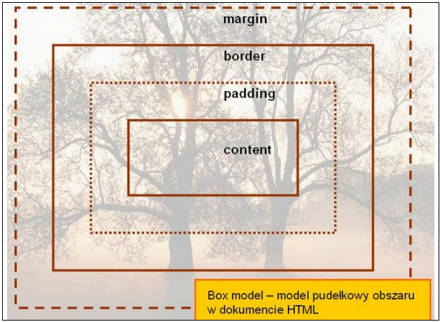

Definicja modelu pudełkowego
Model pudełkowy to schemat, wg którego określane są wielkości części składowych elementu. Elementy prezentowane na stronie nie funkcjonują w próżni i każdy z nich generuje prostokątne pole – pudełko (box).Zawartośc modelu pudełkowego
| Zawartość | Opis |
| content | zawartość elementu (np.: tekst, obrazek) |
| padding | otaczające marginesy wewnętrzne, odstęp między obramowaniem i zawartością elementu |
| border | obramowania wokół zawartości elementu, ma styl i kolor |
| margin | marginesy wokół ramki (margines zewnętrzny). Jest to pusty obszar wokół ramki, który nie ma koloru tła i jest przeźroczysty |
Uwagi na temat modelu pudełowego
Uwaga 1
Padding, border i margin mogą mieć zerową wartość.
Uwaga 2
Tło elementu jest określone dla wszystkich z podanych powyżej obszarów z wyjątkiem marginesów zewnętrznych, które zawsze są przezroczyste (transparent).
Model pudełkowy
Różnice pomiędzy paddingiem i marginesem
Padding określa przestrzeń wokół danego elementu, np: lub >div>, natomiast margines
przestrzeń pomiędzy elementami.

Jak widać na rysunku, padding oznaczony jest kolorem niebieskim. Określa on wielkość
przestrzeni wokół elementu p. Element ten posiada również margines zaznaczony kolorem
pomarańczowym. Jest to odległość od brzegu elementu body.